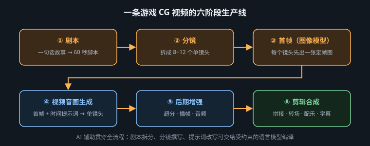

从叙事命题到交付母版，把创意、连续性与算力拆成六道可验收的生产门

“写一条提示词直接生成成片”把剧本、表演、构图、资产、运动、剪辑和声音同时交给一次采样。任何一项失败，整段视频都要重算；即使偶然成功，也很难知道成功来自哪个决定。专业生产线反过来工作：先用便宜、可修改的媒介批准高影响决策，再把昂贵模型当执行器。文字阶段修改人物动机只需几分钟，到了十个镜头全部生成后再改，意味着首帧、运动和声音一起返工。
因此，流程不是“脚本 → 视频”的直线，而是命题 → 镜头 → 视觉合同 → 动态执行 → 剪辑验证 → 母版交付的逐级冻结。每一关都要有输入、批准物、退回条件和负责人；没有批准物，就没有所谓“进入下一阶段”。
| 生产门 | 要冻结的决定 | 批准物 | 退回条件 |
|---|---|---|---|
| G1 叙事 | 观众最后知道什么、感受什么 | 一句命题、节拍表、总时长 | 删掉任一段仍不影响理解 |
| G2 分镜 | 每镜信息、景别、视点、时长 | 镜头清单与低成本 animatic | 一镜承担两个转折或动作链 |
| G3 视觉 | 角色锚点、场景轴线、光色规则 | 设定页、色板、批准首帧 | 遮住脸后仍无法识别角色 |
| G4 运动 | 主体运动、相机运动、起止状态 | 逐镜候选与版本记录 | 动作改变身份、空间或道具结构 |
| G5 成片 | 剪辑节奏、声音、过渡与字幕区 | 有声粗剪、精剪 | 必须靠旁白解释本应可见的信息 |
| G6 交付 | 规格、色彩、响度、版权与归档 | 母版、渠道版、项目清单 | 画幅裁切伤及主体或安全区 |
返工成本 ≈ 变更影响的镜头数 × 每镜下游阶段数。角色肩甲颜色在 G3 改一次，只需更新设定与首帧；到 G5 才改，会波及生成、局部修复、调色、合成与宣传裁切。排期时不要只估“生成几条”，要给批准、失败重试和下游重做留预算。
首帧能锁构图，却不能保证镜头结束时人物和道具处于可剪辑状态。动态叙事真正需要的是起始状态 A 与结束状态 B：谁在画面哪一侧、视线朝向哪里、门是开是关、光源是否变化、下一镜要接哪个动作。能提供尾帧约束时，应同时批准 A/B；只能输入首帧时，也要在镜头卡里把 B 写成可见结果。
| 层级 | 首帧必须锁定 | 动态阶段允许变化 | 绝不能漂移 |
|---|---|---|---|
| 身份 | 脸部轮廓、服装结构、左右锚点 | 表情、发丝与布料次级运动 | 年龄、装备数量、左右关系 |
| 空间 | 轴线、地平线、主体位置、光源方向 | 景深、轻微视差、雾与尘 | 门窗拓扑、屏幕方向、太阳方位 |
| 动作 | 起势与重心 | 一个完整动词 | 无因果瞬移、额外肢体、道具换手 |
| 镜头 | 焦距感、机位、画幅 | 一种主要移动与明确速度 | 推拉摇移叠加、焦距无故突变 |
SHOT S06 · 5.0s · narrative purpose: reveal, not reaction START FRAME: medium over-shoulder shot behind the captain, blue planet still hidden by the right edge of the panoramic viewport; captain occupies left third; red uniform collar and silver right-shoulder clasp remain visible; 50mm lens. SUBJECT MOTION: the captain slowly raises her chin once, shoulders remain still. CAMERA MOTION: one restrained 8% dolly-in, constant speed, no pan, no orbit. ENVIRONMENT MOTION: the ship drifts left, causing the blue planet to emerge from frame right; star field moves as one rigid layer, no random streaks. END STATE: planet center reaches the upper-right thirds intersection; captain is still looking screen-right, ready to cut to her eye close-up. LIGHT: cool planet bounce gradually lifts the cheek edge; cockpit key light and all console geometry remain unchanged. AVOID: face turning to camera, uniform redesign, extra crew, blinking interface text, handheld shake, zoom, lens flare covering the planet.
这张卡把“揭示”分配给环境相对运动，把“反应”留给下一镜。若同一镜里再让舰长转身、流泪并下令，模型和观众都无法判断信息重点。验收时只问：行星是否以可控路径出现，尾态能否接到画右方向的眼部特写。
生产线一旦超过三五个镜头，文件名里的“最终版2真的最终”就会成为系统性风险。看板至少为每镜记录当前阶段、负责人、批准版本、阻塞原因、下一动作和依赖镜头。版本号描述内容演进，批准状态描述团队决定，两者不能混为一谈：S06_v05 可能比 v04 更新，却仍未获批准；下游必须继续使用标记为 approved 的 v04，直到新版本正式替换。
| 字段 | 示例 | 生产意义 |
|---|---|---|
| 状态 | 首帧待批 / 动态生成 / 精修 / 已锁定 | 防止未批准素材流入下游 |
| 批准物 | S06_frame_v04_APPROVED | 所有执行者引用同一基准 |
| 阻塞 | 等待 S05 尾帧视线方向 | 暴露依赖，不用无效抽卡填时间 |
| 变更原因 | 行星提前出现，破坏首次揭示 | 保留决策依据，避免旧错误回归 |
每次评审只产生三种结论：批准、带明确问题退回、或因上游变化作废。不要留下“差不多”“再看看”这种无法驱动动作的状态。被否决的版本可以归档，但不得覆盖；它们是失败模式样本，也是下一轮提示词中禁止项的证据来源。
第一类是决策串层。分镜没批准就做精首帧，团队会因沉没成本保留错误镜头。第二类是提示词过载。让模型同时完成表演、复杂运镜、变焦、天气变化与场景变形，失败后无法归因。第三类是局部漂亮、连续性错误。单镜头惊艳，却把角色从画左改到画右、把道具换手，剪辑时产生跳轴。第四类是过早增强。先超分插帧再粗剪，把算力花在最终被删除的素材上。第五类是版本失忆。没有记录模型、seed、输入帧与修订理由，团队无法复现批准结果。
画面无明显畸变，不等于镜头有效。一个技术上干净但没有交付新信息、没有改变情绪或无法接前后镜头的片段，仍应删除。先按叙事功能判生死，再按形体、闪烁和清晰度排修复优先级。
这条生产线真正优化的不是单次生成速度，而是让错误尽可能早、尽可能便宜地暴露。下一章先处理 G1 到 G2：如何把散文式故事改写为模型可协助、导演可审批、制片可估价的镜头清单。